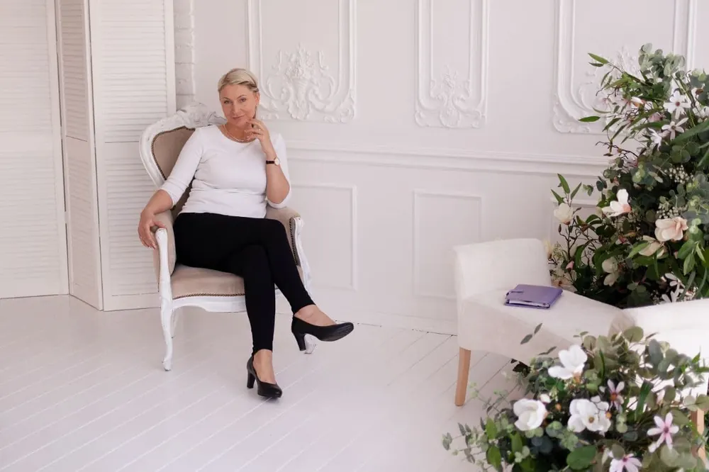

О психологе

Рада приветствовать вас здесь — в пространстве, где можно дышать свободнее, быть собой и получать поддержку. Понимаю, как важно почувствовать человека, с которым вы собираетесь идти в глубину своих переживаний. В терапии значима не только квалификация, но и личность. Поэтому расскажу о себе немного — честно и по-человечески.
Я родилась в 1973 году в Таллинне, росла в семье военного, любила небо, полёты на планере и прыжки с парашютом. Моё поколение — поколение ярких, порой непростых историй.
Юность принесла мне тяжелый опыт, который сильно повлиял на мою дальнейшую жизнь. Много лет я училась жить заново, учиться слышать себя, исцеляться, делать выборы не из боли, а из внутренней опоры. Этот путь стал одной из причин, почему я так бережно и глубоко работаю с травмой сегодня.
После школы мне хотелось изучать психологию, но обстоятельства сложились иначе. Чтобы освоить эстонский язык, я пошла работать в детский сад. Позже вышла замуж, в 1993 году родила дочь, а затем оказалась одна с маленьким ребёнком на руках. Это было трудное время, но я нашла в себе силы и опору, шаг за шагом создавая стабильность, уверенность и будущее.
Через несколько лет я снова создала семью. Мы с мужем построили салон красоты, который я курировала почти двадцать лет. Параллельно, следуя своему призванию, я поступила в Социально-Гуманитарный институт и в 2005 году закончила его с красным дипломом по специальности «психолог-практик». Во время учёбы у меня родился сын.
Меня всегда интересовали вопросы материнства, эмоционального состояния женщин, лактации и еще в институте я проводила исследование о том, как личностные особенности матери влияют на продолжительность грудного вскармливания. Сейчас это помогает мне работать с мамами, поддерживать их в непростые моменты.
Также участвовала в проекте Института суицидологии, сопровождала людей после попыток суицида, глубоко изучала темы насилия, проводила исследования — и всё это сформировало во мне способность быть рядом даже с самыми тяжёлыми переживаниями человека.
На моём пути было много личной терапии, тренингов, семинаров и профессионального роста. Это постепенное, но очень глубокое созревание как специалиста.
Десять лет назад я изменила имя — с «Оксаны» на «Ксению». Это был важный внутренний шаг к себе.
Сегодня моя жизнь — это частная практика, мои любимые взрослые дети, внуки и тёплые, доверительные отношения с родными.
Я работаю онлайн и очно в Таллинне, создавая пространство, где можно чувствовать себя безопасно. В терапии я выбираю индивидуальный подход. Мы исследуем эмоции, мысли, убеждения, помогаем психике исцелить травмы, переписать старые сценарии, найти истинные причины трудностей.
Каждый мой клиент — это не просто «запрос». Это уникальная личность, путь которой я искренне уважаю. Я поддерживаю вас всей душой, помогаю увидеть новые горизонты и почувствовать как свою жизнь проживать по-настоящему.
И благодарна каждому, кто доверяет мне быть рядом.
Частые запросы клиентов приведены списком внизу страницы.
Отзывы здесь ПЕРЕЙТИ НА СТРАНИЦУ ОТЗЫВЫ ОТ КЛИЕНТОВ
Больше полезной информации и шагов самопомощи вы найдёте на моих страницах:
Instagram: @psycholog.skiper
Facebook: Ksenia Skiperskaja
Если есть какие-то вопросы, свяжитесь online.psychologyonline@gmail.com
Примеры запросов от клиентов
- наладить отношения с важными людьми *партнер, родители, дети
- построить отношения с мужчиной
- проработать детские травмы
- простить/отпустить отца/мать
- сепарироваться от родителей
- понять причины проблем
- поработать с самооценкой, самоуважением
- распознавать манипуляции, научиться защищаться от них
- контролировать гнев, агрессию, не срываться на партнере, детях или подчиненных
- устанавливать и отстаивать свои границы
- ценить себя, выбирать себя, говорить "нет"
- самостоятельно регулировать эмоции и поведение
- справляться со своими негативными эмоциями
- понять, что ограничивает в достижении целей (например денег)
- разобраться с обидами, со злостью, со страхом, виной, стыдом, тревогой, раздражением, гневом, ревностью и другими эмоциями, мешающими жить
- ценить свой труд, поднять свой ценник, попросить повышения или прибавки
- лучше понимать психологию противоположного пола
- экологично выстраивать отношения
Поддержу на этапе проживания непростых ситуаций: миграция, переезд, адаптация на новом месте, смена работы, разрыв отношений, развод, потеря близкого человека.
Помогу разрешить сложности в переживаниях подавленного состояния, изоляции, апатии, одиночества, в случаях сексуального или домашнего насилия, развода, смерти или суицидальных мыслей, конфликтов в детско-родительских, семейных отношениях, отношениях в любовном треугольнике.
Сопровожу Вас на пути преодоления подросткового кризиса или кризиса среднего возраста, на пути познания себя, своих ресурсных состояний и поиска смыслов.
Ограничения: С Хайгекассой не сотрудничаю. Медикаменты не выписываю.
Справок для разрешения на ношение оружия не выдаю.